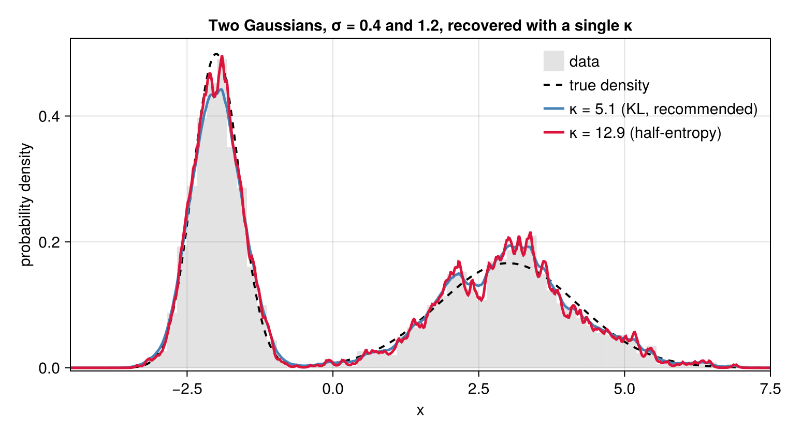

Tutorial
This walkthrough fits a bimodal distribution, chooses the smoothing scale, and tests candidate models against the data.
A worked example
Consider a mixture of two Gaussians with equal weight, a narrow one ($\sigma=0.4$) centered at $x=-2$ and a broad one ($\sigma=1.2$) at $x=3$:
using PenalizedDensity, Random
Random.seed!(42)
comps = [(w=0.5, μ=-2.0, σ=0.4), (w=0.5, μ=3.0, σ=1.2)]
truepdf(x) = sum(c.w * exp(-((x - c.μ) / c.σ)^2 / 2) / (c.σ * sqrt(2π)) for c in comps)
N = 2000
x = [rand() < comps[1].w ? comps[1].μ + comps[1].σ * randn() :
comps[2].μ + comps[2].σ * randn() for _ in 1:N]
κ = select_kappa_kl(x) # recommended scale (KL cross-validation)
d = DensityEstimate(x; κ) # fit at the recommended scaled is a callable density: d(x) returns $Q(x)$. Plotting the estimate against the truth — here at the recommended KL scale (see select_kappa_kl below) and, for contrast, the sharper half-entropy scale $\kappa$ (the plotting code uses Makie, which is not a dependency of the package):
using CairoMakie
ki = kappa_interval(x)
d_half = DensityEstimate(x; κ = ki.κ)
g = range(-4.5, 7.5; length = 800)
lines(g, truepdf.(g); linestyle = :dash, label = "true density")
lines!(g, d.(g); label = "κ = $(round(κ, digits=1)) (KL, recommended)")
lines!(g, d_half.(g); label = "κ = $(round(ki.κ, digits=1)) (half-entropy)")
axislegend()
Both scales recover both peaks: the recommended KL $\kappa$ is visibly smoother, the half-entropy $\kappa$ sharper, but each resolves the narrow and the broad component at once. This is the key point: κ is a resolution scale, not a component width. Its reciprocal $1/\kappa$ is smaller than either component's $\sigma$, so the estimator resolves features of any larger width; the local width of $Q$ is set by the data, not by $\kappa$. The selectors that produced these two scales — select_kappa_kl and kappa_interval — are introduced next.
Choosing the smoothing scale
PenalizedDensity offers four automatic selectors. They split into two families: two that target estimation error (recommended for smooth data) and two that resolve information in the data (the right choice for heavily tied or discrete data). The recommended default is select_kappa_kl, which minimizes a likelihood (Kullback–Leibler) cross-validation score:
κ_kl = select_kappa_kl(x) # recommended: error-optimal, likelihood cross-validation5.134113841720841Its score is the leave-one-out log-likelihood $-\tfrac1N\sum_i \ln \hat Q_{-i}(x_i)$, an estimate of $\mathrm{KL}(Q \,\|\, \hat Q_\kappa)$ up to a constant; it is the criterion native to the estimator, whose action is itself a log-likelihood. A close relative, select_kappa_cv, instead minimizes a least-squares (MISE) cross-validation score:
κ_cv = select_kappa_cv(x) # least-squares cross-validation (MISE)5.534890166125478Both are evaluated analytically — each leave-one-out density comes from a first-order expansion of the fit, so no point-by-point refitting is needed — and to leading order they select the same $\kappa \propto N^{1/5}$. Across a range of test densities select_kappa_kl tracks the error-optimal scale most closely (see benchmarks/) and is the cheaper of the two, which is why it is the default. Both assume a continuous underlying density; on heavily tied or coarsely rounded data their scores are unbounded as $\kappa\to\infty$, and the two information-resolving selectors below are the better choice.
The first information-resolving selector, kappa_interval, returns a principled scale with a plausible range. Its basis is that the reduced action $g(\kappa) = S(\kappa) + W\ln\kappa$ ($W$ = total count) rises monotonically between two exact limits — $W/2$ as $\kappa\to0$ (all points merge into one lump) and $W/2 + W H$ as $\kappa\to\infty$ (the $N$ points become isolated), where $H$ is the Shannon entropy of the data. The normalized quantity $h(\kappa)\in[0,1]$ is thus the fraction of the data's entropy that $\kappa$ resolves, and its half-point is the returned scale:
ki = kappa_interval(x) # (; κ, lo, hi): the half-entropy scale and a band
(κ = round(ki.κ, digits=1), lo = round(ki.lo, digits=1), hi = round(ki.hi, digits=1))(κ = 12.9, lo = 5.9, hi = 28.5)The picture below makes this concrete. The reduced action (red) climbs from its $\kappa\to0$ floor $W/2$ (nothing resolved, $h=0$) to its $\kappa\to\infty$ ceiling $W/2 + W H$ (every point resolved, $h=1$); both dashed limits are exact and depend only on the counts. The returned scale is where the curve is halfway up — half the entropy resolved — and the shaded band is the plausible range:

The second information-resolving selector, select_kappa_ms, returns a related but distinct scale: the point of minimum sensitivity, where |dS/d ln κ| is smallest. Its derivative is computed analytically, so the result is free of the noise that finite-differencing the action curve would introduce.
κ_ms = select_kappa_ms(x) # minimum-sensitivity scale11.860042592604607select_kappa_ms and kappa_interval generally select different scales, but both resolve information in the data rather than minimizing error, and on smooth densities they tend to over-resolve — which is why the cross-validation selectors are recommended by default. Their value is on heavily tied or discrete data, where they stay bounded and the cross-validation scores do not.
Goodness of fit
Because the estimate is a genuine likelihood fit, you can ask how well a specific model distribution describes the data. Using the fit d from above, chisq is a robust, binning-free $\chi^2$ (the squared Hellinger distance between a trial density and the data):
wrong(x) = exp(-((x - 0.5) / 2.5)^2 / 2) / (2.5 * sqrt(2π)) # a single broad Gaussian
(correct = round(chisq(d, truepdf); digits = 1),
incorrect = round(chisq(d, wrong); digits = 1))(correct = 38.2, incorrect = 2151.3)The true mixture yields a far smaller $\chi^2$ than the mismatched single Gaussian. pvalue turns the statistic into a significance under the reference distribution of $\chi^2$ — the exact finite-$N$ law (a generalized chi-squared), computed by default:
(p_correct = round(pvalue(d, truepdf); digits = 3),
p_incorrect = round(pvalue(d, wrong); digits = 6))(p_correct = 0.253, p_incorrect = 0.0)The single Gaussian is decisively rejected; the true mixture is not. chisq_pdf / chisq_ccdf give the reference density and upper-tail probability, and expected_chisq its mean. To test many trial densities against one fit, build the reference once with chisq_reference and reuse it:
ref = chisq_reference(d)
(mean = round(expected_chisq(ref); digits = 2),
p_correct = round(pvalue(ref, chisq(d, truepdf)); digits = 3))(mean = 34.54, p_correct = 0.253)Passing method = :largeN selects instead the closed-form large-$N$ approximation of the original paper (an inverse-Gaussian law with mean $\kappa X/\sqrt2 \approx 0.7$ per effective bin); it is cheaper but overstates tail probabilities at the scales the selectors above typically choose.